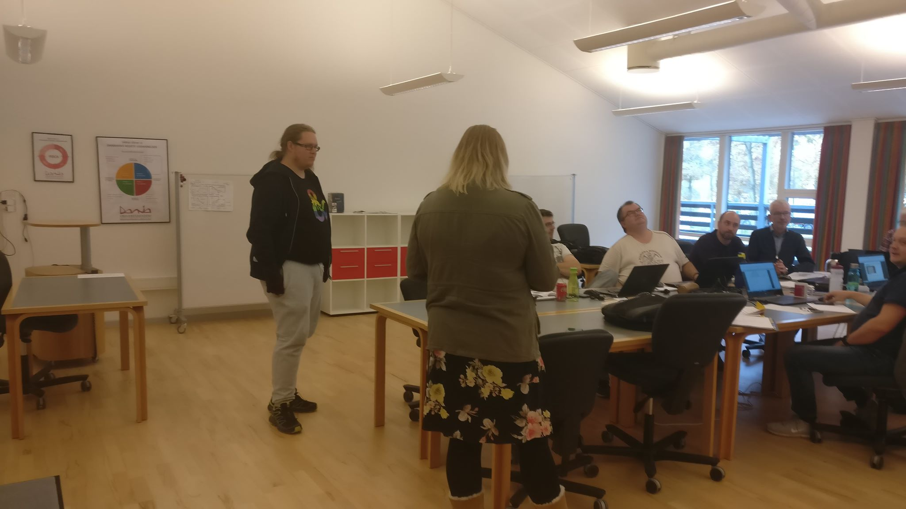
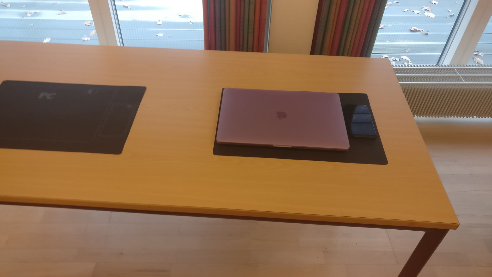

DesignThinking Projektet
De 14 dage vi havde med Design Thinking, var både nyt og spændene, hvordan man kan går fra ingenting til lige pludselig havde et produkt.
Den først
Den første opgave vi fik, gik ud på at vi ud af ordene ”at studere” skulle vi udarbejde kort et produkt ud fra de fem faser:
- Emphatize - Vær nysgerrige. Observer, interview, oplev, fotografer...
- Define - Få overblik over hvad man har lært om brugerne og deres forhold til problemstillingen.
- Ideate - Udvikl så mange ideer til løsninger man kan komme på. Gerne i flere omgange. Brug "Hvordan kan vi..." spørgsmålet.
- Prototype – Gå i værkstedet og fremstil en prototype på løsningen, eller en del af den.
- Test - Med udgangspunkt i prototypen tester man løsnings-ide.
I min gruppe kom vi frem til at lave en PowerPlade til vores bord på skolen, så man slap for ledninger på bordene, og her er et par billeder derfra.

Den tredje dag
Quick’n Dirty Video dagen var en sjov dag, vi hyggede os rigtig meget. Vi startede med at brainstorme idéer til hvad vores film skulle handle om, vi havde mange gode idéer men det faldet på Airtame, så er en ledningsløs løsning til et klasselokale som vi brugte på Aalborg Handelsskole.
Dette er filmen vi lavede Airtame.
Brugerrejsen

Dette er en brugerrejse for en fyr ved navn Jonas, brugerrejsen starter allerede første gang han ser en reklame/trailer på filmen, ved hjælp af rejsen finder man de problemer der kan opstå undervejs, i dette tilfælde parkeringsproblemer, lange køer og reklamer, men man finder også de gode ting.
Design Thinking projektet
Emnet for selve projektet var udlån og reservation. Sammen med Sofie og Julie gik vi gang med at vær nysgerrige og fik skreven en masse idéer ned til hvilken vej vi skulle går, vi gik dem i gennem, og fandt til sidst to veje vi kunne gå, det ene var en app til fest udlejning og den anden var en app til udlejning af skønhed (Et sted hvor man kunne book frisør, message, spa osv.) vi gik men fest udlejning, så vi forberedte en masse spørgsmål til både kommen bruger og til virksomheder som kunne være interesseret i appen. Ud af disse interview fik vi en masse brugbart data. Og til sidst gik arbejde i gang med at udvikle en prototype, som vi skulle af prøve på de andre.
Her er lidt billeder og film fra projektet.
Kilder: DesignThinking forløbet på moodle.